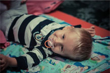

- Вы помогли детям:
- в 2014 году 24 342 123 руб
- в августе 1 200 345 руб
Список реабилитационных клиник
Текст статьи - требует замены. Фонд Red Nose создан для помощи детям, страдающим тяжелыми неврологическими: приводящими к инвалидности заболеваниями: ДЦП, аутизмом, эпилепсии и прочими тяжелыми заболеваниями. Главная цель фонда Red Nose — помочь тяжело больным детям, сделать их жизнь счастливой, вернуть им радость детства, окружить их заботой и теплом, подарить им и их родителям надежду и чувство уверенности в завтрашнем дне. Red Nose — очень теплый фонд, где вся работа строится на личном участии учредителей и сотрудников в решении проблем каждого подопечного. Мы стремимся привлечь к помощи нашим подопечным как можно больше решении проблем каждого подопечного. Мы стремимся привлечь к помощи нашим подопечным как можно больше единомышленников, мы открыты для любого сотрудничества и будем рады новым друзьям и благотворителям. Фонд Red Nose и его команда с надеждой смотрят в будущее и готов принимать помощь, чтобы помогать другим.
- Название первой Некой Клиники
- Вторая Клиника. Название
- Третья Клиника. Ссылка на страницу клиники.
- Четвёртая Клиника. Ссылка на страницу клиники.
Документы, необходимые для оказания помощи
Вступительный текст - требует замены.Фонд Red Nose создан для помощи детям, страдающим тяжелыми неврологическими: приводящими к инвалидности заболеваниями: ДЦП, аутизмом, эпилепсии и прочими тяжелыми заболеваниями.
- Документ по списку
- Документ по списку
- Документ по списку
- Документ по списку (скачать)
Полезная информация
Вступительный текст - требует замены.Фонд Red Nose создан для помощи детям, страдающим тяжелыми неврологическими: приводящими к инвалидности заболеваниями: ДЦП, аутизмом, эпилепсии и прочими тяжелыми заболеваниями.
Выделенный блок текста, требующий особенного внимания. Текст требует замены.Фонд Red Nose создан для помощи детям, страдающим тяжелыми неврологическими: ДЦП, аутизмом, эпилепсии и прочими тяжелыми заболеваниями.Вступительный текст - требует замены.Фонд Red Nose создан для помощи детям, страдающим тяжелыми неврологическими: приводящими к инвалидности заболеваниями: ДЦП, аутизмом, эпилепсии и прочими тяжелыми заболеваниями.
Заголовок второго уровня
Вступительный текст - требует замены.Фонд Red Nose создан для помощи детям, страдающим тяжелыми неврологическими: приводящими к инвалидности заболеваниями: ДЦП, аутизмом, эпилепсии и прочими тяжелыми заболеваниями. Вступительный текст - требует замены.Фонд Red Nose создан для помощи детям, страдающим тяжелыми неврологическими: приводящими к инвалидности заболеваниями: ДЦП, аутизмом, эпилепсии и прочими тяжелыми заболеваниями.
*Очень важный текст!!! Короткие абзацы в одно-два предложения в одну-две строки максимум.Заголовок второго уровня
Вступительный текст - требует замены.Фонд Red Nose создан для помощи детям, страдающим тяжелыми неврологическими: приводящими к инвалидности заболеваниями: ДЦП, аутизмом, эпилепсии и прочими тяжелыми заболеваниями.
Вступительный текст - требует замены.Фонд Red Nose создан для помощи детям.
Вступительный текст - требует замены.Фонд Red Nose создан для помощи детям, страдающим тяжелыми неврологическими: приводящими к инвалидности заболеваниями: ДЦП, аутизмом, эпилепсии и прочими тяжелыми заболеваниями. Вступительный текст - требует замены.